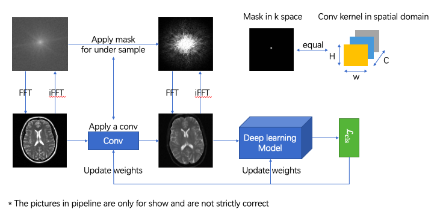

| Paper PDF |

|
Magnetic Resonance Imaging (MRI) is a widely used medical imaging technique, while MRI scans typically take long time and may be associated with risk and discomfort. So it is significant to reduce the runtime of MRI when make sure we already get enough medical information.Recent advances in deep-learning-based computer vision hint us with a bunch of potential methods for MRI sampling. Therefore, We aim to find the best sampling pattern that can collect enough medical informative data from MRI, as well as reducing the runtime of MRI. At the end of this project, we achieved promising results on the problem of finding the best sampling pattern for MRI by using a conv layer to simulate the physical layer and combining it with a deep learning model. |
| Paper: |
Code and Data:
|